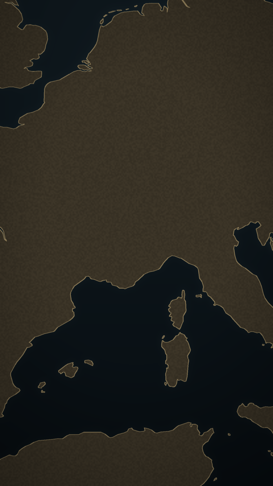

ILLUSTRATION
LOUVRE · 22 AOÛT 1911
ARCHIVE
Léonard de Vinci, La Joconde · Musée du Louvre
QUI L'A VOLÉE ?
ILLUSTRATION
7 SEPTEMBRE 1911
ILLUSTRATION
PRISON DE LA SANTÉ
FAUSSE PISTE

CARTE SCHÉMATIQUE
DÉCEMBRE 1913
ILLUSTRATION
VINCENZO PERUGGIA, VITRIER
ILLUSTRATION
LUNDI 21 AOÛT 1911
ARCHIVE
La Joconde (détail) · Musée du Louvre
ILLUSTRATION
LOUVRE · 22 AOÛT 1911
Le 22 août 1911,
au Louvre, il ne reste
que quatre crochets.
La Joconde a disparu.
Qui a pu la sortir
du musée ?
La police soupçonne
même le poète Apollinaire.
Il passe près d'une semaine
en prison.
Fausse piste.
Un indice reste
sur la vitre :
une empreinte de pouce.
Le voleur est déjà fiché.
Personne ne fait
le rapprochement.
Plus de deux ans passent.
Le tableau dort
dans une chambre
parisienne.
En décembre 1913, un homme
le propose à un antiquaire
de Florence.
Il est arrêté.
C'est Vincenzo Peruggia,
un vitrier italien.
Il avait travaillé
sur la vitrine
de la Joconde.
Un lundi de fermeture,
il l'avait emportée
en blouse d'ouvrier.
Pour beaucoup d'historiens,
ce vol l'a rendue célèbre
dans le monde entier.
Tout est parti
de quatre crochets
sur un mur vide.